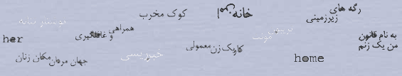
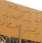

|
نقطهی عطفی در مطالعات دربارهی خشونت خانگی 12/15/2005 4:37:46 PM Translator: ساره طارمی |
کد:102 |
|
|
مبارزه های روزمره علیه خشونت های روزمره ؟ 12/3/2005 4:11:13 PM طلعت تقي نيا |
کد:101 |
|
|  |
زندگی با HIV/AIDs * 12/1/2005 4:01:46 PM |
کد:100 |
|
روز جهاني مبارزه با خشونت عليه زنان در كلن 11/28/2005 10:24:31 AM ميترا شجاعي |
کد:99 |
|
|
دختران نوجوان 5/1 برابر بيشتر از پسران آزار ميبينند 11/20/2005 4:54:33 AM |
کد:98 |
|
|
آيان هرسي علي: جوامعي كه به زنان ظلم ميكنند، عقبمانده و ستمگرند 11/18/2005 6:20:37 AM Translator: میترا شجاعی |
کد:97 |
|
|
حساسيت موضوع و پنهان کاري از دلايل فقدان پژوهش درباره خشونت هاي ناموسي است 11/11/2005 4:40:25 PM خشونت هاي ناموسي (2) :گروه تحقيق تريبون فمينيستي |
کد:96 |
|
|
خشونت چند لایه 11/11/2005 4:39:23 PM پروین ضرابی |
کد:95 |
|
|
از روز جهاني زن تا روز جهاني مبارزه با فقر 10/26/2005 4:27:33 AM تبریز- فرانك فريد |
کد:94 |
|
|
جهاني عاري از فقر و خشونت عليه زنان ممكن است! 10/22/2005 10:48:13 AM منیزه نجم عراقی |
کد:93 |
|
صفحه اول |
صفحه بعد |
صفحه آخر
|
1 |
2 |
3 |
4 |
5 |
6 |
7 |
8 |
9 |
10 |
11 |